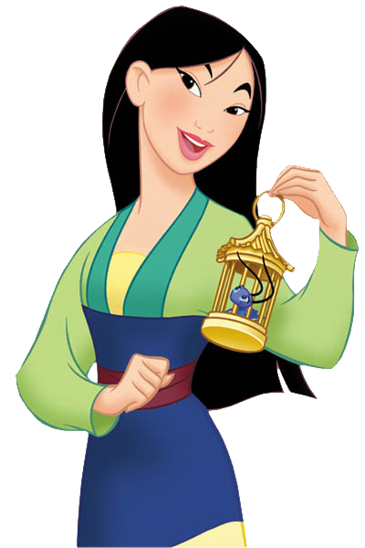
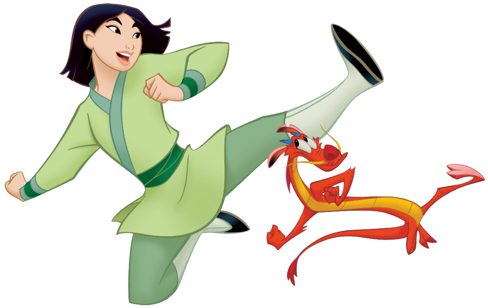

A Princersa Guerreira
Numa época de pré-conceitos morais em relação à mulher, Fa Mulan ascendeu com garra e determinação se tornando a heroína da China. O filme do universo Disney desponta como modelo de força e com uma pontada de humor irreverente que fica a cargo do nosso querido Mushu (guardião da família Fa). O filme Mulan é destaque no quesito de que se nos esforçamos podemos nos tornar muito maiores do que a sociedade nos impõe.
Uma moça que enfrenta a morte por um ente querido, ultrapassa seus limites e luta com toda a sua garra pelo o que acredita. Esses são os ingredientes para um filme perfeito, com muito drama e talvez uma pontinha de glamour de Holywood, porém o que lhes apresento é o filme animado: Mulan.
Mulan é um filme produzido pelo universo Disney, mas diferente de tudo o que vemos apresenta uma história tão boa e cheia de significados que te faz assistir um milhão de vezes e não se cansar. Além de trazer a cultura chinesa que é rica de costumes e beleza.
Depois de assisti-lo você tem vontade de sair correndo por ai fazendo coisas incríveis como nossa protagonista Fa Mulan. O filme gira em torno da moça desajeitada e esquecida que deve trazer honra a sua família arranjando um bom homem para se casar, mas dá para imaginar que ela arranja confusão logo de cara, né?

Mulheres Fortes na Dsiney
Além de chegar atrasada para o encontro com a casamenteira, cria uma enorme confusão, a mulher diz que Mulan jamais arranjará um marido assim e isso na China é uma grande desonra para uma família que tem apenas uma filha. Enquanto isso o país é invadido por um povo sangrento os Hunos, que são liderados por Shan-Yu, e o imperador toma a decisão de recrutar um homem de cada família em toda a dinastia.
Quando Mulan volta para casa triste por decepcionar seu pai, com quem tem uma ligação muito bonita e ela espera dar orgulho a ele, logo os homens do imperador chegam dando essa noticia e ela fica abaladissima, pois seu pai era o único homem vivo da família e era velho e debilitado demais para lutar numa guerra. E aí o filme começa a tomar forma e nossa personagem começa a demonstrar seu potencial.
Mulan decidi disfarçar-se de homem para lutar na guerra no lugar de seu pai. Ela toma as rédeas da situação e mesmo com medo e arriscando sua vida não olha para trás, pois fazia em nome de quem amava. Os ancestrais ficam preocupados com toda essa situação e pedem ao tocador-de-gongo-número-um Mushu (um antigo guardião) para acordar o Grande Dragão de Pedra para ir proteger Mulan, mas ele acaba se metendo numa encrenca enorme quando destrói a imagem de pedra. Mushu é o personagem mais engraçado de todo o filme, com seu palavreado todo cool e suas confusões, ao lado do grilinho da sorte ganho da avó de Mulan, ele vai numa empreitada de tornar a jovem numa “soldado condecorada”, esperando com isso conquistar o trabalho de guardião principal novamente e seu pedestal ao lado dos outros guardiões. Pode-se afirmar com certeza que foi a partir do filme Mulan que a Disney decidiu apostar suas fichas em heroínas, pois neste filme a nossa protagonista apresenta um perfil memorável. Ela não precisa de um príncipe encantado, ela luta “pau-a-pau” com outros homens e com sua sensibilidade e esperteza conquista amigos queridos e a confiança do Capitão Lee Shang que ao descobrir que “Ping”, nome masculino que a jovem adere, é na verdade uma mulher começa a nutrir sentimentos por ela.
Desde o começo do filme Mulan demonstra que na verdade seu caminho, talvez, fosse diferente do que todos esperavam dela como uma simples dona de casa. Quando ela vai para guerra logo no começo é fraca e desajeitada e acaba por ser expulsa da tropa por Shang, mas ela não desiste e enfrenta o desafio que ele havia dado outro dia: subir num grande palanque e pegar a flecha que está colada lá com dois pesos nos braços, um significa a disciplina e o outro a força. Usando os dois para ajudar e não para propriamente pesar ela alcança a flecha no topo e isso impulsiona todos da tropa e o capitão, também.
Ação atrás de ação Mulan prova ser muito mais do que uma mulher, mas que, além disso, é capaz de ser igual para igual com um homem desde que a tratem como tal.
Depois de um ataque do qual ela é responsável por salvar a todos, ela é ferida e descobrem seu segredo sendo expulsa do batalhão e acusada de traição. Porém, ela tem fortes indícios de que o inimigo ainda está na China, causando grande perigo e mais uma vez ela vai à busca de ajudar seus companheiros, mesmo ninguém acreditando nela, até mesmo Shang. Depois de uma cena perigosa, em que ela enfrenta Shan-Yu derrotando-o e salvando o imperador, ela ganha até um cargo alto por demonstrar grande força e sabedoria, mas se detém a voltar para casa, trazendo consigo a espada do inimigo e o selo imperial para trazer honra a família Fa. Quando encontra seu pai, ele não se importa com isso, mas apenas que sua filha voltou. Sua mãe e avó que são obcecadas para arranjar um casamento para Mulan ficam indignadas com o fato de que ela voltou com uma espada e não um marido, até que Shang (depois de receber um conselho incrível do imperador, diga-se de passagem) vai atrás dela com o pretexto de devolver seu capacete.
Mushu volta a ser guardião com honras e todos os ancestrais Fa fazem festa com o sucesso de Mulan na guerra, que ficará conhecida como a heroína da China. Além de ser um filme de humor, animação ele é também um filme em que são testados os limites de Mulan, até onde ela é capaz de ir pelo o que acredita e mais - é uma inspiração, pois mesmo nos piores momentos ela faz de suas fraquezas sua maior força.